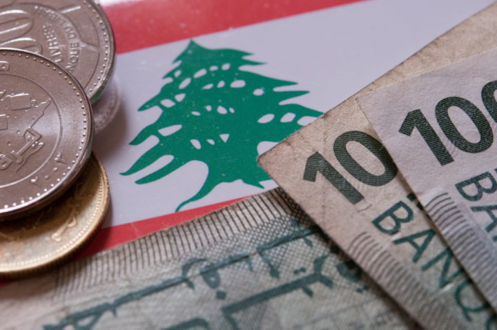

أحدث الأخبار
الأخبار حسب القسم

أكدت مصادر مطلعة أن الوضع الاقتصادي في لبنان يشهد تحسناً تدريجياً مع تنفيذ خطة الإنقاذ الاقتصادي التي أعلنتها الحكومة. وأشارت المصادر إلى أن القرارات الأخيرة ساهمت في استقرار سعر صرف الليرة اللبنانية، وتحسين مؤشرات النمو الاقتصادي بشكل عام.
|
أخبار عاجلة
- رئيس الحكومة يلتقي سفراء دول الخليج
- البنك المركزي يعلن عن إجراءات جديدة لدعم الليرة
- افتتاح معرض فني جديد في متحف بيروت
استطلاع الرأي
|